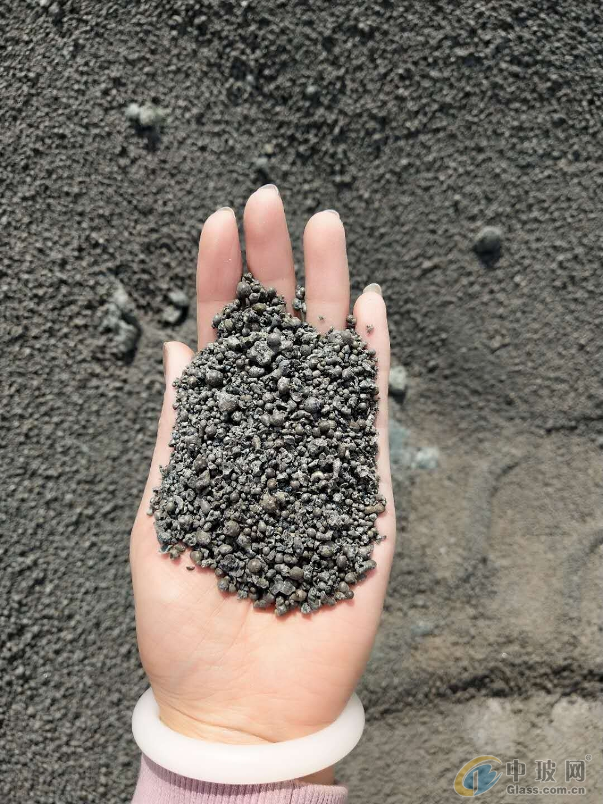
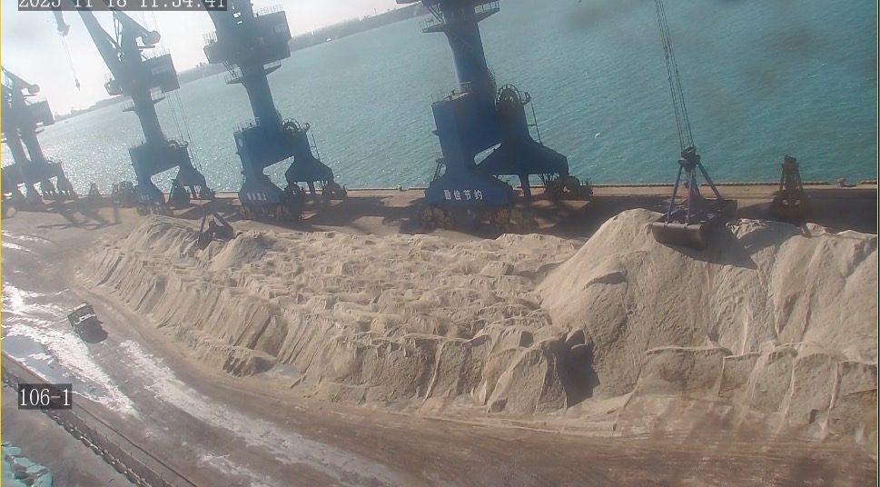

GGBFS Market on Track for $36 Billion by 2034: What the India and Southeast Asia Demand Wave Means for Suppliers
The global ground granulated blast furnace slag market is projected to grow from USD 20.7 billion in 2024 to USD 36.0 billion by 2034 at a 5.7 per cent CAGR. Behind this expansion lies a structural shift in cement consumption: India is targeting 7 to 8 per cent growth in FY27 driven by infrastructure and housing, while Southeast Asia construction is surging toward USD 8.6 trillion by 2030. For suppliers of GBFS, GGBFS, and blended cement materials, the opportunity is not just volume. It is about aligning specifications, consistency, and logistics with markets that are rapidly scaling their use of supplementary cementitious materials.
GGBFS 市场迈向 2034 年 360 亿美元：印度与东南亚需求浪潮对供应商意味着什么
全球磨细粒化高炉矿渣市场预计从 2024 年的 207 亿美元增长至 2034 年的 360 亿美元，复合年增长率 5.7%。这一扩张背后隐藏着水泥消费的结构转变：印度凭借基础设施与住房驱动，定下了 2027 财年 7% 至 8% 的增长目标；而东南亚建筑业正向着 2030 年的 8.6 万亿美元猛冲。对 GBFS、GGBFS 及掺配水泥材料供应商而言，机遇不仅是体量，更在于让规格、一致性与物流与那些正快速扩大补充胶凝材料使用的市场对齐。

The ground granulated blast furnace slag market is no longer a niche segment of the cement industry. Recent projections place the sector at USD 36.0 billion by 2034, up from USD 20.7 billion in 2024, representing a compound annual growth rate of 5.7 per cent. This is not speculative growth. It is being driven by real regulatory, infrastructure, and sustainability pressures that are forcing cement producers across Asia to rethink their raw material mix.
1. The $36 billion trajectory: why GGBFS is becoming a primary material
For decades, GGBFS was viewed as a supplementary option: a by-product of steelmaking that could replace some clinker in blended cement. That perception is shifting. As carbon pricing mechanisms expand and construction codes in major markets tighten their environmental requirements, the economic case for slag-based cement is strengthening. GGBFS reduces the carbon intensity of finished cement by replacing clinker that would otherwise be produced through calcination. It also improves long-term durability and sulfate resistance, properties that matter deeply in coastal and tropical construction environments across Southeast Asia and the Indian subcontinent.

2. India's blended cement boom and what it means for slag demand
India is now the most important demand story for cementitious materials. In the first eleven months of FY26, the market recorded a 9.2 per cent year-on-year volume increase. For FY27, leading cement makers are targeting 7 to 8 per cent growth, supported by sustained government infrastructure spending, housing demand, and urbanization momentum. The key detail for suppliers is not just the volume. It is the product mix.
India's Bureau of Indian Standards has been tightening compliance requirements for blended cements, including Portland Pozzolana Cement and Portland Slag Cement. These standards directly influence procurement decisions at the plant level. As more Indian producers expand their PSC and PPC lines to meet both regulatory requirements and cost pressures, the demand for consistent, high-quality slag feedstock is increasing. For importers, this means specifications matter more than ever. Variability in slag quality, particle size distribution, or glass content can disrupt grinding operations and affect final cement performance. Procurement teams at major Indian cement groups are now screening suppliers on chemical consistency, logistics reliability, and documentation discipline before committing to long-term supply agreements.
3. Southeast Asia: the construction wave driving SCM adoption
The Asia-Pacific construction market reached USD 5.69 trillion in 2024 and is projected to surge to USD 8.64 trillion by 2030. Within this region, Indonesia and Vietnam are exhibiting the highest construction Gross Value Added shares, supported by rapid urbanization, infrastructure expansion, and industrial development. What makes this relevant for slag suppliers is the nature of the projects. Massive infrastructure corridors, industrial zones, and port expansions are being built with durability requirements that favor blended cement systems.
In Indonesia, the government is pushing ahead with new capital relocation projects, toll road networks, and smelter-industrial complexes that require large volumes of durable concrete. In Vietnam, the manufacturing shift from China continues to drive industrial park construction, while major cities expand their metro and highway systems. Both markets are importing significant volumes of cement and clinker, and both are beginning to specify blended cement products for public works to reduce costs and improve sustainability metrics. For suppliers in China with reliable GBFS and GGBFS output, this represents a direct commercial pipeline that did not exist at this scale five years ago.

4. What suppliers need to align on now
The demand wave is real, but accessing it requires more than having material available. Buyers in India and Southeast Asia are increasingly systematic in their supplier evaluation. The priorities that come up consistently in procurement conversations include:
- Chemical consistency across batches, especially CaO, SiO2, Al2O3, and MgO ratios - Predictable particle size distribution that matches the buyer's grinding circuit - Reliable moisture control for bulk shipments in tropical climates - Clear laycan schedules and port execution discipline - Documentation readiness, including test certificates and chain-of-custody records - Container, jumbo bag, and bulk vessel loading flexibility
These are not soft preferences. They are operational requirements that determine whether a supplier gets a trial shipment or a long-term contract. The suppliers who treat every detail with the same rigor as product specification are the ones capturing volume in this expansion phase.
5. The China supply position and Caofeidian port advantage
China remains the largest producer of blast furnace slag globally, with integrated steel complexes generating consistent volumes of high-quality granulated slag. The Caofeidian port zone in northern China offers a strategic export position: direct access to steel plant output, deep-water berths capable of handling bulk vessels, and established logistics infrastructure for both domestic distribution and international shipment. For buyers in India, Bangladesh, Southeast Asia, and the Middle East, sourcing from this region provides a combination of volume reliability, quality consistency, and competitive freight economics that is difficult to replicate from smaller or less integrated origins.
The GGBFS market is entering a phase where demand growth is structural rather than cyclical. India's blended cement expansion, Southeast Asia's infrastructure construction wave, and the global shift toward lower-carbon building materials are all converging on a single requirement: reliable, specification-consistent slag supply at scale. For suppliers with the right product, the right port, and the right operational discipline, the next decade offers a clear commercial opening.
磨细粒化高炉矿渣市场已不再是水泥行业的小众板块。最新预测将该领域定位为 2034 年达到 360 亿美元，较 2024 年的 207 亿美元大幅增长，复合年增长率为 5.7%。这不是投机性增长，而是由真实的监管、基础设施与可持续性压力所驱动，这些压力正迫使全亚洲的水泥生产商重新思考其原材料组合。
1. 360 亿美元轨迹：GGBFS 为何正成为主流材料
几十年来，GGBFS 一直被视为补充性选择：一种可替代掺配水泥中部分熟料的钢铁生产副产品。这种认知正在改变。随着碳定价机制扩展、主要市场的建筑规范收紧环保要求，矿渣基水泥的经济论证正在加强。GGBFS 通过替代原本需经煅烧生产的熟料，降低了成品水泥的碳强度。它还能提升长期耐久性和抗硫酸盐侵蚀能力，这些特性对东南亚及印度次大陆沿海与热带建筑环境至关重要。
2. 印度掺配水泥热潮及其对矿渣需求的影响
印度现已成为胶凝材料领域最重要的需求故事。在 2026 财年的前 11 个月，市场录得了 9.2% 的同比增长。进入 2027 财年，主要水泥制造商定下了 7% 至 8% 的增长目标，支撑来自持续的政府基础设施支出、住房需求与城市化势头。对供应商而言，关键细节不仅是体量，更是产品组合。
印度标准局一直在收紧掺配水泥的合规要求，包括硅酸盐火山灰水泥和硅酸盐矿渣水泥。这些标准直接影响工厂层面的采购决策。随着更多印度生产商扩展其 PSC 和 PPC 生产线以满足监管要求与成本压力，对稳定、高品质矿渣原料的需求正在增加。对进口商而言，这意味着规格比以往任何时候都更重要。矿渣质量、粒度分布或玻璃体含量的波动可能扰乱研磨作业并影响最终水泥性能。主要印度水泥集团的采购团队现在正基于化学一致性、物流可靠性与文件规范性筛选供应商，然后才会承诺长期供应协议。
3. 东南亚：推动 SCM 采用的建筑浪潮
亚太建筑市场于 2024 年达到 5.69 万亿美元，预计将在 2030 年猛增至 8.64 万亿美元。在这一区域内，印度尼西亚和越南正展现出最高的建筑业增加值份额，支撑来自快速城市化、基础设施扩张与工业发展。对矿渣供应商而言，关键在于项目的性质。大规模基础设施走廊、工业园区与港口扩建正在以耐久性要求建造，这些要求偏爱掺配水泥体系。
在印度尼西亚，政府正推进新首都迁移项目、收费公路网络以及需要大量耐久混凝土的冶炼工业综合体。在越南，从中国转移而来的制造业继续推动工业园区建设，同时主要城市扩展其地铁与高速公路系统。两个市场都在进口大量水泥与熟料，并且都开始为公共工程指定掺配水泥产品以降低成本并改善可持续性指标。对拥有可靠 GBFS 与 GGBFS 产出的中国供应商而言，这代表了一条在五年前还不存在如此规模的直接商业管道。
4. 供应商现在需要对齐什么
需求浪潮是真实的，但要接入它需要的不只是有材料可供。印度和东南亚的买家在供应商评估上正变得越来越系统化。采购对话中持续出现的优先事项包括：
- 批次间化学一致性，特别是 CaO、SiO2、Al2O3 和 MgO 比例 - 与买方研磨系统匹配的 predictable 粒度分布 - 热带气候下散货装运的可靠水分控制 - 清晰的 laycan 时间表与港口执行纪律 - 文件完备性，包括检验证书与 custody 记录 - 集装箱、大袋与散货船装载的灵活性
这些不是软性偏好，而是决定供应商获得试运还是长期合同的操作要求。以与产品规格同等严谨态度对待每个细节的供应商，才是那些在此扩张阶段 capture 体量的人。
5. 中国供应地位与曹妃甸港口优势
中国仍是全球最大的高炉矿渣生产国，综合钢铁联合体持续产出高品质粒化矿渣。中国北方的曹妃甸港区提供了战略性出口位置：直接接入钢铁厂产出、可处理散货船的深水泊位，以及面向国内分销与国际货运的成熟物流基础设施。对印度、孟加拉国、东南亚和中东的买家而言，从这一区域采购提供了体量可靠性、质量一致性与有竞争力运费经济的组合，这是较小或整合度较低的产地难以复制的。
GGBFS 市场正进入一个需求增长为结构性而非周期性的阶段。印度的掺配水泥扩张、东南亚的基础设施建筑浪潮，以及全球向低碳建筑材料的转变，都汇聚于单一需求：规模化、规格稳定的可靠矿渣供应。对拥有合适产品、合适港口与合适操作纪律的供应商而言，未来十年提供了明确的商业窗口。
Explore products or discuss your inquiry.
If this market signal is relevant to your sourcing plan, you can review our core product pages or contact us with laycan, quantity, target specification and loading method.
Request a quote